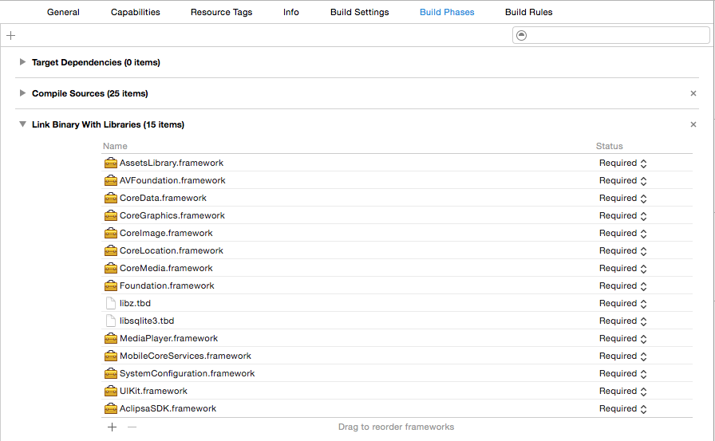

Overview
Aclipsa SDK Startup Guide
Welcome to the Aclipsa SDK. This SDK allows you to easily integrate the Aclipsa service into your apps.
Section 1 — What is in the Aclipsa SDK?
Documentation
Details of the available Aclipsa SDK classes and functionality.
Framework
The framework contains all of the compiled code and the header files for the classes that are included in the SDK.
It includes AFNetworking v2. Therefor it does not need to be added to your project and can be used from the framework by including AclipsaSDK/AFNetworking or any of it’s specific headers.
Resources Bundle
The resources bundle contains the project assets needed by the SDK.
Sample Application
We’ve included a sample application to help you get started with the SDK. It demonstrates the use most of the features of the SDK.
Section 2 — How do I use the Aclipsa SDK?
Basic Architecture
Use of the SDK centers around the ACLIPSession class. It’s the hub for communication with the Aclipsa servers and coordinates all of the communication and data management in the SDK. Apps should first create a session with the createSessionWithAppID class method and then use the activeSession class method for all future access. Only one session will ever be created per launch, which performs all other SDK functions, e.g. login, logout, loading a video or message list, uploading videos, etc.
All network communication in the Aclipsa SDK is asynchronous and uses blocks to notify the caller when a network call has completed or if an error has occurred. All network-based methods will take two blocks as parameters, one that will be called on a successful completion and one that gets called if any error occurs. For methods that load data from the network the completion block may be called more than once. An initial call with cached data can occur with an additional call occuring once the data is refreshed.
Section 3 — Registering an App with Aclipsa
If you haven’t already received an API Key and Shared Secret for your app, please contact support@aclipsa.com.
Section 4 — Building an App with the Aclipsa SDK
Xcode Project Configuration
A few steps need to be taken in order to get your project to build correctly with the Aclipsa SDK. First add the -ObjC flag to Other Linker Flags. This allows the SDK to correctly link with your project.

Next, link a few of the system frameworks and libraries to your project, if you haven't already linked them for other reasons. These enable various features like video playback to function. The required frameworks and libraries are:
AssestsLibrary.frameworkAVFoundation.frameworkCoreData.frameworkCoreGraphics.frameworkCoreImage.frameworkCoreLocation.frameworkCoreMedia.frameworkFoundation.frameworklibz.tbdlibsqlite3.tbdMediaPlayer.frameworkMobileCoreServices.frameworkSystemConfiguration.frameworkUIKit.framework
In the Xcode project editor, select your Target and highlight the Build Phases tab. Expand Link Binary With Libraries. Click the + button and add the required libraries.

You also need to add the Aclipsa SDK framework and resources bundle to your project. The simplest way to add them is to simply drag and drop them into your project’s file list. You can also add them through the Add File menu items if you prefer. The following provided files need to be added:
AclipsaSDK.frameworkAclipsaSDK.bundle
Getting an ACLIPSession
At this point your project is set-up to use the Aclipsa SDK. You should start by creating an ACLIPSession in your App Delegate's didFinishLaunching method:
- (BOOL)application:(UIApplication )application didFinishLaunchingWithOptions:(NSDictionary )launchOptionsfunc application(application: UIApplication, didFinishLaunchingWithOptions launchOptions: [NSObject: AnyObject]?) -> Bool
Add:
ACLIPSession.createSessionWithAppID("Your App ID", serverEnvironment: ACLIPDevelopmentServer)
[ACLIPSession createSessionWithAppID:@"Your App ID" serverEnvironment:ACLIPDevelopmentServer]All future access and calls to the session should then use:
ACLIPSession.activeSession()
[ACLIPSession activeSession]to access the session.
Logging into the SDK
Log in to the SDK to view and send videos and messages:
ACLIPSession.activeSession().loginWithUserID("UserID", completionBlock: { (results: AnyObject!) in // Login successful }, errorBlock: {(error: NSError!) in // Error logging in })
[[ACLIPSession activeSession] loginWithUserID:@"UserID" completionBlock:^(id results)
{
// Login successful
}
errorBlock:^(NSError *error)
{
// Error logging in
}];Sending a Message
Send a message to recipients with an optional title, description, and attributes:
ACLIPSession.activeSession().sendMessage("Video Title", messageText: "Message Text", recipients: ["someone@example.com", "example@example.com"], videoURL: self.videoURL, skipEncoding: false, attributes: [:], completeBlock: { (results: AnyObject!) in // Message sent successfully }, errorBlock: { (error: NSError!) in // Error when sending message })
[[ACLIPSession activeSession] sendMessage:@"Video Title" messageText:@"Message Text" recipients:@[@"someone@example.com", @"example@example.com"] videoURL:[self videoURL] skipEncoding:NO, attributes: @{}, completeBlock:^(id results)
{
// Message sent successfully
}
errorBlock:^(NSError *error)
{
// Error when sending message
}];Uploading A Video
Upload a video. By default, these videos can be viewed by any user.
ACLIPSession.activeSession().uploadVideoAtURL(NSURL.fileURLWithPath("Path to video"), title: "Video Title", attributes: [:], skipEncoding: false, completeBlock: { (results: AnyObject!) in // Video upload successful }, errorBlock: { (error: NSError!) in // Video upload error })
[[ACLIPSession activeSession] uploadVideoAtURL:[NSURL fileURLWithPath:@"Path to video"] title:@"Video Title" attributes:@{} skipEncoding:NO completeBlock:^(id results)
{
// Video upload successful
}
errorBlock:^(NSError *error)
{
// Video upload error
}];Loading Messages
Register with the SDK for message polling. SDK checks for messages every 30 seconds
ACLIPSession.activeSession().registerMessageLoadingCompletionBlock({ (messages: [AnyObject]!, threads: [AnyObject]!) in var sortDescriptor: NSSortDescriptor = NSSortDescriptor(key: "lastMessage.createdDate", ascending: false) self.messageThreads = ((threads as NSArray).sortedArrayUsingDescriptors([sortDescriptor]) as? [ACLIPMessageThread])! self.tableView.reloadData() }, errorBlock: { (error: NSError!) in NSLog("An error occured while loading messages: %@", error); })
[[ACLIPSession activeSession] registerMessageLoadingCompletionBlock:^(NSArray *messages, NSArray *threads) {
NSSortDescriptor *sortDescriptor = [[NSSortDescriptor alloc] initWithKey:@"lastMessage.createdDate" ascending:NO];
[self setMessageThreads:[threads sortedArrayUsingDescriptors:@[sortDescriptor]]];
[[self tableView] reloadData];
}
errorBlock:^(NSError *error) {
NSLog(@"An error occured while loading messages: %@", error);
}];Viewing A Video Message
Reload a message before trying to view it. This obtains authentication keys and ensures the message is still available to the recipient.
ACLIPSession.activeSession().loadMessageWithGUID(self.message?.guid, completeBlock: { (aclipMessage: AnyObject?) in if aclipMessage != nil { if let message = aclipMessage as? ACLIPMessage { self.message = message let controller: ACLIPMoviePlayerViewController! = ACLIPMoviePlayerViewController(forMessage: self.message) self.presentMoviePlayerViewControllerAnimated(controller) } } }, errorBlock: { (error: NSError!) in // Error loading the message })
[[ACLIPSession activeSession] loadMessageWithGUID:[[self message] guid] completeBlock:^(ACLIPMessage *aclipMessage)
{
if (aclipMessage)
{
ACLIPMoviePlayerViewController *controller = [ACLIPMoviePlayerViewController moviePlayerViewControllerForMessage:aclipMessage];
[self presentMoviePlayerViewControllerAnimated:controller];
}
}
errorBlock:^(NSError *error)
{
// Error loading the message
}];Loading Videos
Load the videos available for a user.
ACLIPSession.activeSession().loadUserVideosWithCompletionBlock({(results: AnyObject?) in self.videos = results as! [ACLIPVideo] self.tableView.reloadData() }, errorBlock: {(error: NSError!) in // Error loading videos })
[[ACLIPSession activeSession] loadUserVideosWithCompletionBlock:^(NSArray *results)
{
[self setVideos:results];
[[self tableView] reloadData];
}
errorBlock:^(NSError *error)
{
// Error loading videos
}];Viewing A Video
Reload a video before trying to view it. This obtains authentication keys and ensures the video is still available to the recipient.
ACLIPSession.activeSession().loadUserVideoWithID(video.guid, completionBlock: { (aclipVideo: AnyObject?) in if aclipVideo != nil { let controller: ACLIPMoviePlayerViewController = ACLIPMoviePlayerViewController(forVideo: video) self.presentMoviePlayerViewControllerAnimated(controller) } }, errorBlock: { (error: NSError!) in // Error loading video })
[[ACLIPSession activeSession] loadUserVideoWithID:[video guid] completionBlock:^(ACLIPVideo *aclipVideo)
{
if (aclipVideo)
{
ACLIPMoviePlayerViewController *controller = [ACLIPMoviePlayerViewController moviePlayerViewControllerForVideo:video];
[self presentMoviePlayerViewControllerAnimated:controller];
}
}
errorBlock:^(NSError *error)
{
// Error loading the video
}];